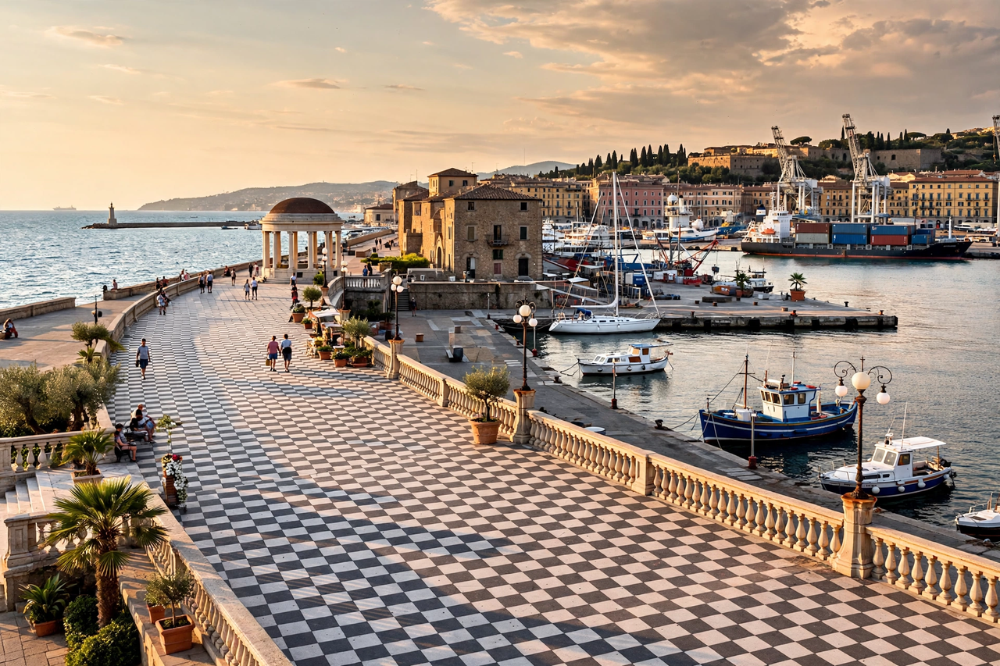

Livorno
| Livorno | |
|---|---|
 | |
| Country | Italy |
| Region | Tuscany |
| Province | Livorno (LI) |
| Elevation | 3 m (10 ft) |
| Population | approx. 154,000 |
| Demonym | Livornesi |
| Time zone | UTC+1 (CET) |
Livorno is a port city on the Ligurian Sea on the western coast of Tuscany, Italy. It is the capital of the Province of Livorno and, with a population of around 154,000, the third-largest city in Tuscany after Florence and Prato. Livorno is one of the most important Italian ports, both commercially and for passenger traffic, and is a significant naval and industrial centre.
The city is famous historically for the Leggi Livornine (Livornina laws) of 1591–1593, issued by Grand Duke Ferdinando I de' Medici, which granted religious toleration and commercial privileges to merchants of all nations. As a result Livorno became one of the most cosmopolitan and multicultural cities of early modern Europe, home to large Jewish, Greek, Armenian, Dutch and English communities. Livorno was also the birthplace of the artist Amedeo Modigliani and the composer Pietro Mascagni, and in 1921 the Italian Communist Party was founded there.
History
Livorno originated as a small coastal settlement in the Middle Ages, controlled by Pisa and later by Genoa, before passing to Florence in 1421. The Medici grand dukes transformed it into Tuscany's principal seaport: the harbour was expanded under Cosimo I, and the city was largely rebuilt to designs associated with Bernardo Buontalenti, whose pentagonal plan for the new city dates from 1576.
The Leggi Livornine made Livorno a free port and a refuge for persecuted groups, including Sephardic Jews expelled from Spain and Portugal. The Jewish community of Livorno became one of the most prosperous in the Mediterranean, and the city lacked a ghetto — unique among Italian cities of the period. In the 17th and 18th centuries Livorno flourished as an entrepôt for trade between northern Europe and the Levant.
During the Second World War, Livorno was heavily bombed by the Allies because of its port and refineries, and much of the historic centre was destroyed. Post-war reconstruction restored the port, which remains central to the local economy alongside shipbuilding, petrochemicals and tourism, including ferry services to Corsica, Sardinia and the Tuscan Archipelago.
Geography
Livorno lies on a flat coastal plain at the southern edge of the Arno delta region, backed by the low Livorno Hills (Colline Livornesi). To the south the coast becomes rocky, with cliffs at Antignano, Quercianella and Castiglioncello. The city's seafront promenade, including the chequerboard Terrazza Mascagni, is a landmark of Italian rationalist-era landscaping.
Main sights
- Venezia Nuova — the "New Venice" district, built in the 17th century on reclaimed land with canals, warehouses and the church of San Ferdinando.
- Fortezza Vecchia and Fortezza Nuova — the Medici fortresses guarding the harbour.
- Monumento dei Quattro Mori — the Monument of the Four Moors (1626), bronze statues of chained prisoners at the foot of the statue of Ferdinando I, a symbol of the city.
- Livorno Cathedral (Duomo), dedicated to St Francis, largely rebuilt after wartime damage.
- Synagogue of Livorno — one of the largest in Italy, rebuilt after the war near the site of the famous 1603 synagogue.
- Terrazza Mascagni — a broad seafront terrace with a black-and-white chessboard pavement.
Economy
The Port of Livorno is one of Italy's major ports for containers, roll-on/roll-off traffic, forest products and new vehicles. The city also hosts a large oil refinery, chemical plants and the Cantieri Navali shipyards. Livorno is the headquarters of ferry operators serving the western Mediterranean islands.
Notable people
- Amedeo Modigliani (1884–1920), painter and sculptor
- Pietro Mascagni (1863–1945), composer of Cavalleria rusticana
- Giovanni Fattori (1825–1908), painter of the Macchiaioli movement
- Carlo Azeglio Ciampi (1920–2016), former President of Italy